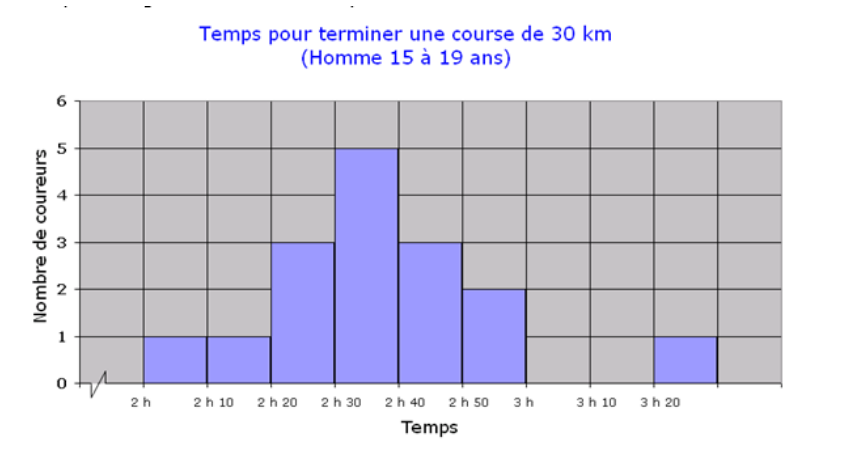

1) Détermine si les variables ci-dessous sont qualitatives ou quantitatives. Dans le cas d’une variable quantitative, indique s’il s’agit d’une variable continue ou discrète.
- Temps consacré aux devoirs - Quantitatives continues
- Nombre de magasins qui prennent part à la levée de fonds - Quantitatives continues
- Niveau d’hémoglobine dans le sang (g/L) - Quantitatives continues
- Dessert préféré - Qualitatives
- Âge - Quantitatives continues
- Volume sonore d’une radio - Quantitatives discrètes
- Malléabilité du métal - Quantitatives discrètes
2) Choisirais-tu un histogramme ou un diagramme à bandes pour représenter graphiquement les situations suivantes? Justifie la réponse.
- Les résultats de 50 roulements d’un dé à 6 faces - diagramme à bandes
- Les distances de 35 athlètes au saut en longueur - histogramme
- Le temps que nécessite un enfant de trois ans pour compléter un casse-tête - histogramme
- La journée de la semaine que les gens préfèrent - diagramme à bandes
3) Quel type de diagramme utiliserais-tu pour représenter les données ci-dessous? Explique ton choix.
-
La quantité d’énergie consommée en Ontario au cours d’une année:
Diagramme à ligne brisée. Ces données représentent l'évolution d'une variable quantitative au cours du temps. C'est le cas d'utilisation parfait pour ce diagramme ayant une application limitée.
-
Le temps consacré aux devoirs par matière en 9e année:
Diagramme à bandes. Ces données sont quantitatives, mais la variable dépendante est une variable qualitative nominale. Un diagramme à bandes permet de facilement comparer les données.
-
La répartition des récoltes de l’été 2010 (p. ex., fruits, légumes, céréales, foin et autres):
Diagramme circulaire. Ce type de diagramme permettrait de facilement comparer comment les récoltes ont étés réparties parmis les différentes produits.
-
La variation de la masse des joueurs d’une équipe de football:
Histogramme. Ces données sont quantitatives et continues. Avec suffisamment de joueurs et des intervalles assez petites, un histogramme pourrait créer une belle distribution des masses.
4) Pour la représentation graphique ci-dessous:

-
Donne la raison pour laquelle un histogramme est plus approprié qu’un diagramme à bandes pour représenter ces données.
Les données sont de type quantitatives continues. Un diagramme à bande ne fait aucun sens car chaque réponse pourrait avoir une valeur différente et aura donc besoin de sa propre bande.
-
Dans quel intervalle de temps le plus grand nombre de coureurs est-il regroupé?
Le plus grand nombre de coureurs se situent dans l'intervalle entre 2h30 et 2h40.
5) Les notes finales, en pourcentage, des élèves de mathématiques de 11e année sont les suivantes: Notes des élèves de la 11e année (voir premier onglet). À l’aide de Google Sheets, représente les résultats graphiquement avec un histogramme.
6) Les élèves d’une classe de 9e année et d’une classe de 12e année ont reçu une liste de cinq animaux: chat, chien, oiseau, poisson et iguane. On leur a demandé de choisir dans la liste celui qu’ils préféreraient comme animal domestique. Voir l'onglet 2 du lien précédant pour un tableau d’effectifs.
Utilise les données pour bâtir un diagramme à bandes verticales doubles.
7) Un service de traiteur a administré un sondage en demandant aux répondants de choisir leur plat préféré parmi six options. Utilise les données du tableau d’effectif dans le troisième onglet du lien précédant pour tracer un diagramme circulaire.
8)
a) Tu aimerais sonder l’opinion des élèves pour déterminer l’appui que recevra Amélie à l’élection de la première ou du premier ministre du conseil des élèves.
-
Définis la population.
Les élèves éligibles à voter dans l'élection du Conseil des élèves
-
Identifie les variables.
- L'age/année scolaire du voteur
- La proximité sociale du voteur à Amélie
- Les besoins/enjeux importants au voteur
-
Détermine si les données seront quantitatives(discrète ou continue) ou qualitatives.
Qualitatives. La question va probablement ressembler à ceci: "Pour qui plannifies-tu voter dans l'élection". Le résulat de ceci sera un nom: une donnée qualitative nominale.
-
Détermine si l’enquête devrait être menée auprès de toute la population (recensement) ou d’un échantillon de la population. Justifie ta réponse.
Toute méthode d'échantillonnage introduit un biais de sélection. Parfois il est très minuscule et négligeable, mais la qualité des données sera toujours pire qu'avec un recensement. Lorsqu'on traite une question de politique, il est très important que chaque voix soit représenté. Dans ce cas, un recensement serait la meilleure option.
b) Un médecin doit recueillir des données afin de comparer la durée des rendez-vous médicaux des personnes âgées entre 30 et 40 ans et des personnes âgées de 65 ans ou plus.
-
Définis la population.
Les patients de ce médecin ayant soit 30-40 ans ou 65+ ans
-
Idenfitife les variables.
-
Détermine si les données seront quantitatives (discrète ou continue) ou qualitatives.
Quantitatives continues. Les données recoltées sont une longueur de temps. Les réunions médicales pourraient durer n'importe quelle longueur.
-
Détermine si l’enquête devrait être menée auprès de toute la population (recensement) ou d’un échantillon de la population. Justifie ta réponse.
Si le médecin a assez de patients, un échantillon produirait probablement des données assez fiables. De plus, un recensement pourait peut être causer des problèmes de confidentialité. Si les données bruts sont publiés, une personne qui connait un patient qui a visité le médecin peut être certain que la durée d'un rendez-vous avec ce patient est dans les données. Si les données bruts ne sont pas publiés par contre, un recensement ne sera pas très difficile a effectuer. La durée des rendez-vous est probablement déja noté électroniquement pour chaque rendez-vous.
9) Une population donnée est formée des groupes de prénoms suivants.
- Marie-Hélène
- Jacqueline
- Georges
- Élias
- Mathieu
- Stéphanie
- Ivan
- Chev
- Rosalie
- Rana
- Lyn
- Nina
- Jose-Marie
- Huong
- Marie-Lou
- Étienne
- Marlyn
- Nicky
- Samuel
- Carole
- Robert
- Marie-Josée
- Alain
- Keith
- Jonas
- Nathan
- Benjamin
Les groupes ci-dessous sont des échantillons de la population. Indique la méthode d’échantillonnage qui a été utilisée pour choisir les prénoms de ces groupes.
-
Jacqueline, Mathieu, Ivan, Jose-Marie, Étienne, Marlyn, Robert, Keith
Échantillonnage aléatoire simple. Les indexes des répondants dans la liste est 1, 4, 6, 12, 15, 16, 20, 23
Voir L'Encyclopédie en ligne des suites de nombres entiers
-
Marie-Hélène, Jacqueline, Georges, Élias, Mathieu, Stéphanie, Ivan, Chev, Rosalie, Rana, Lyn, Nina, Jose-Marie
Échantillonnage aléatoire en grappes où chaque personne de la grappe est sondé
-
Georges, Rana, Nina, Lyn, Samuel, Nathan
Échantillonnage aléatoire simple
-
Georges, Stéphanie, Rosalie, Nina, Marie-Lou, Nicky, Robert, Keith, Benjamin
Échantillonnage aléatoire systématique où \(k = 3\) et l'origine au hasard est 2
À FINIR
10) Pour chacun des cas ci-après, précise la méthode d’échantillonnage qui conviendrait le mieux. Explique ta réponse.
-
Tu veux connaître l’opinion des élèves de 12e année au sujet du bal des finissants. Il y a 134 élèves de 12e année. Tu as besoin d’un échantillon de 60 élèves.
Étant donné que la population en question a déja beaucoup en commun, un échantillonnage aléatoire simple suffirait. Le groupe est facile a sonder et, d'après la question, il n'y a pas de groupes minoritaires à cibler.
-
Dans une usine, on fabrique des ampoules. Pour assurer la qualité de la production, on doit faire des tests sur un échantillon d’ampoules. Propose une méthode d’échantillonnage qui permettrait de sélectionner cet échantillon.
Un échantillage aléatoire systématique conviendra mieux à cette situation. Dans cette instance, l'ordre de la liste de la population à une important particulière: c'est l'ordre par lequel les ampoules ont sorties de la machine. Sans un système pour assurer que chaque n-ième ampoule est choisie, un grand écart pourrait se présenter entre ampoules. Si une erreur avait eu lieu lors de cet écart, beaucoup d'ampoules auraient étés contaminées.
11) Pour sonder l’opinion des élèves au sujet du port de l’uniforme à l’école secondaire, on place une boîte de suggestions à la cafétéria de l’école.
-
Quelle est la population à l’étude?
Les élèves du secondaire de l'école en question
-
Précise la méthode d’échantillonnage.
Échantillonnage volontaire.
-
S’agit-il d’un échantillon biaisé? Explique ta réponse.
Oui. Ce type d'échantillonnage fait souvent ressortir les gens ayant une opinion forte sur le sujet tout en mal représentant la majorité silencieuse. Cependant, selon l'objectif du sondage, je pense qu'un échantillonnage volontaire pourrait être approprié. Si l'objectif du sondage est de permettre a ceux ayant une opinion de se faire entendre et de souligner leurs problèmes avec la décision de l'uniforme, le sondage accompli son objectif.